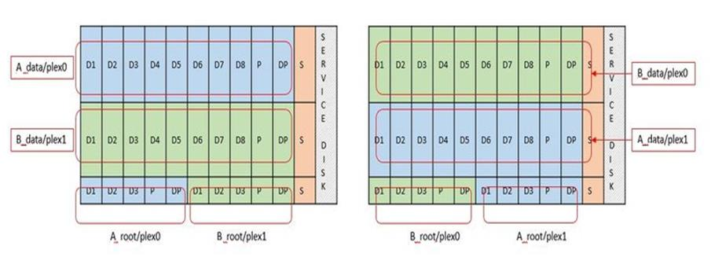

Notes de version
Notes de version
Services RAID logiciels pour le stockage local
 Suggérer des modifications
Suggérer des modifications
Le RAID logiciel est une couche d'abstraction RAID implémentée dans la pile logicielle ONTAP. Elle fournit les mêmes fonctionnalités que la couche RAID sur une plateforme ONTAP traditionnelle telle que FAS. La couche RAID effectue des calculs de parité des disques et protège contre les pannes de disques individuelles au sein d'un nœud ONTAP Select.
Indépendamment des configurations RAID matérielles, ONTAP Select propose également une option RAID logicielle. Un contrôleur RAID matériel peut ne pas être disponible ou n'être pas souhaitable dans certains environnements, notamment lors du déploiement de ONTAP Select sur un matériel générique petit format. Software RAID étend les options de déploiement disponibles pour inclure de tels environnements. Pour activer le RAID logiciel dans votre environnement, voici quelques points à retenir :
-
Elle est disponible avec une licence Premium ou Premium XL.
-
Elle prend uniquement en charge les disques SSD ou NVMe (requiert une licence Premium XL) pour les disques racine ONTAP et de données.
-
Il nécessite un disque système distinct pour la partition de démarrage de la machine virtuelle ONTAP Select.
-
Choisissez un disque distinct, soit un disque SSD, soit un lecteur NVMe, pour créer un datastore pour les disques système (NVRAM, carte Boot/CF, coredump et Mediator dans une configuration à plusieurs nœuds).
-
Notes
-
Les termes « disque de service » et « disque système » sont utilisés de manière interchangeable.
-
Les disques de service sont les VMDK utilisés au sein de la machine virtuelle ONTAP Select pour assurer la maintenance des différents éléments, tels que la mise en cluster, le démarrage, etc.
-
Les disques de service sont situés physiquement sur un seul disque physique (appelé collectivement disque physique de service/système), vu depuis l'hôte. Ce disque physique doit contenir un datastore DAS. ONTAP Deploy crée ces disques de service pour la machine virtuelle d'ONTAP Select pendant le déploiement du cluster.
-
-
Il est impossible de séparer davantage les disques du système ONTAP Select entre plusieurs datastores ou entre plusieurs disques physiques.
-
Le RAID matériel n'est pas obsolète.
Configuration RAID logicielle pour le stockage local
Lors de l'utilisation d'un RAID logiciel, l'absence d'un contrôleur RAID matériel est idéale, mais si un système dispose d'un contrôleur RAID existant, il doit respecter les exigences suivantes :
-
Le contrôleur RAID matériel doit être désactivé de sorte que les disques puissent être présentés directement au système (JBOD). Cette modification peut généralement être effectuée dans le BIOS du contrôleur RAID
-
Ou le contrôleur RAID matériel doit être en mode SAS HBA. Par exemple, certaines configurations du BIOS autorisent un mode “AHCI” en plus de RAID, qui peut être choisi pour activer le mode JBOD. Cela active un passthrough, de sorte que les disques physiques puissent être vus comme étant sur l'hôte.
En fonction du nombre maximum de disques pris en charge par le contrôleur, un contrôleur supplémentaire peut être nécessaire. Avec le mode HBA SAS, vérifiez que le contrôleur d'E/S (SAS HBA) est pris en charge avec une vitesse de 6 Gbit/s. Toutefois, NetApp recommande un débit de 12 Gbit/s.
Aucun autre mode ou configuration de contrôleur RAID n'est pris en charge. Par exemple, certains contrôleurs permettent une prise en charge RAID 0 qui peut artificiellement permettre le passage des disques mais les implications peuvent être indésirables. La taille prise en charge des disques physiques (SSD uniquement) est comprise entre 200 Go et 16 To.

|
Les administrateurs doivent garder le contrôle des disques utilisés par la machine virtuelle ONTAP Select et éviter toute utilisation involontaire de ces disques sur l'hôte. |
Disques virtuels et physiques ONTAP Select
Pour les configurations avec contrôleurs RAID matériels, la redondance de disque physique est fournie par le contrôleur RAID. La solution ONTAP Select est présentée avec un ou plusieurs VMDK à partir desquels l'administrateur ONTAP peut configurer les agrégats de données. Ces VMDK sont répartis dans un format RAID 0, car le logiciel ONTAP RAID est redondant, inefficace et inefficace du fait de la résilience fournie au niveau matériel. En outre, les VMDK utilisés pour les disques système sont dans le même datastore que les VMDK utilisés pour stocker les données des utilisateurs.
Avec le RAID logiciel, ONTAP Deploy présente à ONTAP Select un jeu de disques virtuels (VMDK) et des disques physiques des mappages de périphériques Raw Device [RDM] pour les SSD et les périphériques d'E/S de type passerelle ou DirectPath pour les NVMes.
Les figures suivantes montrent cette relation plus en détail, soulignant la différence entre les disques virtualisés utilisés pour les serveurs virtuels internes de ONTAP Select et les disques physiques utilisés pour stocker les données de l'utilisateur.
Logiciel ONTAP Select RAID : utilisation de disques virtualisés et de RDM

Les disques système (VMDK) résident dans le même datastore et sur le même disque physique. Le disque NVRAM virtuel requiert un support rapide et durable. Par conséquent, seuls les datastores NVMe et de type SSD sont pris en charge.

Les disques système (VMDK) résident dans le même datastore et sur le même disque physique. Le disque NVRAM virtuel requiert un support rapide et durable. Par conséquent, seuls les datastores NVMe et de type SSD sont pris en charge. Lorsque vous utilisez des disques NVMe pour les données, le disque du système doit également être un périphérique NVMe pour des raisons de performance. Les cartes INTEL Optane sont un bon candidat pour le disque système dans une configuration 100 % NVMe.
|
|
Avec la version actuelle, il est impossible de séparer davantage les disques du système ONTAP Select entre plusieurs datastores ou plusieurs disques physiques. |
Chaque disque de données est divisé en trois parties : une petite partition racine (bande) et deux partitions de taille équivalente pour créer deux disques de données vus au sein de la machine virtuelle ONTAP Select. Les partitions utilisent le schéma RD2 (données racines) comme indiqué dans les figures suivantes pour un cluster à un seul nœud et pour un nœud dans une paire HA.
P signale un disque de parité. DP signale un disque double parité et S signale un disque de rechange.
Partitionnement de disque RDD pour les clusters à un seul nœud

Partitionnement de disque RDD pour les clusters multinœuds (paires HA)

Le logiciel RAID de ONTAP prend en charge les types RAID suivants : RAID 4, RAID-DP et RAID-TEC. Ce sont les mêmes constructions RAID que les plates-formes FAS et AFF. Pour le provisionnement racine, ONTAP Select ne prend en charge que RAID 4 et RAID-DP. Lorsque vous utilisez RAID-TEC pour l'agrégat de données, la protection globale est RAID-DP. ONTAP Select HA utilise une architecture sans partage qui réplique la configuration de chaque nœud sur l'autre nœud. Cela signifie que chaque nœud doit stocker sa partition racine et une copie de la partition racine de son homologue. Étant donné qu'un disque de données dispose d'une seule partition root, le nombre minimal de disques de données varie selon que le nœud ONTAP Select fait partie d'une paire HA ou non.
Pour les clusters à un seul nœud, toutes les partitions de données sont utilisées pour stocker des données locales (actives). Pour les nœuds faisant partie d'une paire haute disponibilité, une partition de données est utilisée pour stocker les données locales (actives) pour ce nœud et la seconde partition de données est utilisée pour mettre en miroir les données actives depuis le homologue haute disponibilité.
Comparaison entre les périphériques Passthrough (DirectPath IO) et Cartes de périphériques brutes (RDM)
VMware ESX ne prend actuellement pas en charge les disques NVMe en tant que Raw Device Maps. Pour que ONTAP Select puisse prendre le contrôle direct des disques NVMe, les disques NVMe doivent être configurés dans ESX en tant que périphériques d'authentification. Veuillez noter que la configuration d'un périphérique NVMe en tant que périphérique d'authentification requiert la prise en charge du BIOS du serveur et qu'il s'agit d'un processus perturbateur nécessitant un redémarrage de l'hôte ESX. De plus, le nombre maximal de périphériques d'authentification par hôte ESX est de 16. Cependant, le déploiement ONTAP limite ceci à 14. Cette limite de 14 dispositifs NVMe par nœud ONTAP Select implique qu'une configuration 100 % NVMe offre une densité très élevée d'IOPS (IOPS/To), au détriment de la capacité totale. De la même façon, si vous souhaitez une configuration haute performance avec une capacité de stockage supérieure, il est recommandé d'utiliser une grande taille de machine virtuelle ONTAP Select, une carte INTEL Optane pour le disque système et un nombre nominal de disques SSD pour le stockage des données.
|
|
Pour exploiter pleinement les performances de NVMe, pensez à la taille importante des machines virtuelles ONTAP Select. |
Il y a une différence supplémentaire entre les dispositifs de passants et les RDM. RDM peut être mappé à une machine virtuelle en cours d'exécution. Les terminaux passthrough requièrent un redémarrage VM. Cela signifie que toute procédure de remplacement de disque NVMe ou d'extension de capacité (ajout de disque) nécessite un redémarrage de machine virtuelle ONTAP Select. Le remplacement de disques et l'extension de capacité (ajout de disques) sont pilotés par un workflow du déploiement ONTAP. ONTAP Deploy gère le redémarrage de ONTAP Select pour les clusters à un seul nœud et le basculement/retour arrière pour les paires haute disponibilité. Toutefois, il est important de noter la différence entre l'utilisation des disques de données SSD (aucun redémarrage ONTAP Select/basculement n'est nécessaire) et la compatibilité avec les disques de données NVMe (le redémarrage ou le basculement ONTAP Select est requis).
Provisionnement des disques physiques et virtuels
Pour optimiser l'expérience utilisateur, le déploiement de ONTAP provisionne automatiquement les disques (virtuels) du datastore spécifié (disque du système physique) et les connecte à la machine virtuelle ONTAP Select. Cette opération a lieu automatiquement lors de la configuration initiale afin que la machine virtuelle ONTAP Select puisse démarrer. Les RDM sont partitionnés et l'agrégat racine est automatiquement créé. Si le nœud ONTAP Select fait partie d'une paire haute disponibilité, les partitions de données sont automatiquement attribuées à un pool de stockage local et à un pool de stockage en miroir. Cette affectation a lieu automatiquement lors des opérations de création de clusters et d'ajout de stockage.
Étant donné que les disques de données de la machine virtuelle ONTAP Select sont associés aux disques physiques sous-jacents, la création de configurations avec un plus grand nombre de disques physiques a des implications sur les performances.
|
|
Le type de groupe RAID de l'agrégat racine dépend du nombre de disques disponibles. Le déploiement de ONTAP sélectionne le type de groupe RAID approprié. S'il dispose de suffisamment de disques alloués au nœud, il utilise RAID-DP, sinon il crée un agrégat racine RAID-4. |
Lorsque vous ajoutez de la capacité à une machine virtuelle ONTAP Select via la technologie RAID logicielle, l'administrateur doit tenir compte de la taille du disque physique et du nombre de disques requis. Pour plus de détails, reportez-vous à la section "Augmenter la capacité de stockage".
À l'instar des systèmes FAS et AFF, seuls les disques de capacité égale ou supérieure peuvent être ajoutés à un groupe RAID existant. Les disques de grande capacité sont de la taille appropriée. Si vous créez de nouveaux groupes RAID, la taille du groupe RAID doit correspondre à celle du groupe RAID existant pour garantir que les performances globales de l'agrégat ne se détériorent pas.
Faites correspondre un disque ONTAP Select au disque ESX correspondant
Les disques ONTAP Select sont généralement étiquetés NET x.y Vous pouvez utiliser la commande ONTAP suivante pour obtenir l'UUID du disque :
<system name>::> disk show NET-1.1 Disk: NET-1.1 Model: Micron_5100_MTFD Serial Number: 1723175C0B5E UID: *500A0751:175C0B5E*:00000000:00000000:00000000:00000000:00000000:00000000:00000000:00000000 BPS: 512 Physical Size: 894.3GB Position: shared Checksum Compatibility: advanced_zoned Aggregate: - Plex: -This UID can be matched with the device UID displayed in the ‘storage devices’ tab for the ESX host

Dans le shell ESXi, vous pouvez entrer la commande suivante pour faire clignoter le voyant d'un disque physique donné (identifié par son naa.unique-ID).
esxcli storage core device set -d <naa_id> -l=locator -L=<seconds>
Pannes de plusieurs disques lors de l'utilisation du RAID logiciel
Il est possible qu'un système rencontre une situation dans laquelle plusieurs disques sont en panne en même temps. Le comportement du système dépend de la protection RAID de l'agrégat et du nombre de disques défaillants.
Un agrégat RAID4 peut survivre à une panne de disque, et un agrégat RAID-DP peut survivre à deux pannes de disque et un agrégat RAID-TEC peut survivre à trois défaillances de disques.
Si le nombre de disques défaillants est inférieur au nombre maximal de défaillances pris en charge par ce type RAID et si un disque de spare est disponible, le processus de reconstruction démarre automatiquement. Si des disques de spare ne sont pas disponibles, l'agrégat transmet des données en état dégradé jusqu'à l'ajout de disques de spare.
Si le nombre de disques défaillants est supérieur au nombre maximal de défaillances pris en charge par le type RAID, le plex local est marqué comme défectueux et l'état de l'agrégat est dégradé. Les données sont servies par le second plex résidant sur le partenaire de haute disponibilité. Cela signifie que toutes les demandes d'E/S du nœud 1 sont envoyées via le port d'interconnexion de cluster e0e (iSCSI) aux disques physiquement situés sur le nœud 2. Si le second plex tombe également en panne, l'agrégat est marqué comme étant en panne et les données sont indisponibles.
Un plex défaillant doit être supprimé et recréé pour la mise en miroir correcte des données à reprendre. Notez qu'une défaillance de plusieurs disques entraînant la dégradation de l'agrégat de données entraîne également la dégradation de l'agrégat racine. ONTAP Select utilise le schéma de partitionnement données-racines (RDD) pour séparer chaque disque physique en une partition racine et deux partitions de données. Par conséquent, perdre un ou plusieurs disques peut avoir un impact sur plusieurs agrégats, notamment la racine locale ou la copie de l'agrégat racine distant, ainsi que l'agrégat de données locales et la copie de l'agrégat de données distant.
C3111E67::> storage aggregate plex delete -aggregate aggr1 -plex plex1
Warning: Deleting plex "plex1" of mirrored aggregate "aggr1" in a non-shared HA configuration will disable its synchronous mirror protection and disable
negotiated takeover of node "sti-rx2540-335a" when aggregate "aggr1" is online.
Do you want to continue? {y|n}: y
[Job 78] Job succeeded: DONE
C3111E67::> storage aggregate mirror -aggregate aggr1
Info: Disks would be added to aggregate "aggr1" on node "sti-rx2540-335a" in the following manner:
Second Plex
RAID Group rg0, 5 disks (advanced_zoned checksum, raid_dp)
Usable Physical
Position Disk Type Size Size
---------- ------------------------- ---------- -------- --------
shared NET-3.2 SSD - -
shared NET-3.3 SSD - -
shared NET-3.4 SSD 208.4GB 208.4GB
shared NET-3.5 SSD 208.4GB 208.4GB
shared NET-3.12 SSD 208.4GB 208.4GB
Aggregate capacity available for volume use would be 526.1GB.
625.2GB would be used from capacity license.
Do you want to continue? {y|n}: y
C3111E67::> storage aggregate show-status -aggregate aggr1
Owner Node: sti-rx2540-335a
Aggregate: aggr1 (online, raid_dp, mirrored) (advanced_zoned checksums)
Plex: /aggr1/plex0 (online, normal, active, pool0)
RAID Group /aggr1/plex0/rg0 (normal, advanced_zoned checksums)
Usable Physical
Position Disk Pool Type RPM Size Size Status
-------- --------------------------- ---- ----- ------ -------- -------- ----------
shared NET-1.1 0 SSD - 205.1GB 447.1GB (normal)
shared NET-1.2 0 SSD - 205.1GB 447.1GB (normal)
shared NET-1.3 0 SSD - 205.1GB 447.1GB (normal)
shared NET-1.10 0 SSD - 205.1GB 447.1GB (normal)
shared NET-1.11 0 SSD - 205.1GB 447.1GB (normal)
Plex: /aggr1/plex3 (online, normal, active, pool1)
RAID Group /aggr1/plex3/rg0 (normal, advanced_zoned checksums)
Usable Physical
Position Disk Pool Type RPM Size Size Status
-------- --------------------------- ---- ----- ------ -------- -------- ----------
shared NET-3.2 1 SSD - 205.1GB 447.1GB (normal)
shared NET-3.3 1 SSD - 205.1GB 447.1GB (normal)
shared NET-3.4 1 SSD - 205.1GB 447.1GB (normal)
shared NET-3.5 1 SSD - 205.1GB 447.1GB (normal)
shared NET-3.12 1 SSD - 205.1GB 447.1GB (normal)
10 entries were displayed..
|
|
Pour tester ou simuler une ou plusieurs défaillances de lecteur, utiliser le storage disk fail -disk NET-x.y -immediate commande. Si un disque de secours se trouve dans le système, l'agrégat commence à reconstruire. Vous pouvez vérifier le statut de la reconstruction à l'aide de la commande storage aggregate show. Vous pouvez supprimer le disque défectueux simulé à l'aide de ONTAP Deploy. Notez que ONTAP a marqué le lecteur comme Broken. Le disque n'est pas réellement cassé et peut être ajouté à l'aide du logiciel ONTAP Deploy. Pour effacer l'étiquette interrompue, entrez les commandes suivantes dans l'interface de ligne de commande d'ONTAP Select :
|
set advanced disk unfail -disk NET-x.y -spare true disk show -broken
La sortie de la dernière commande doit être vide.
NVRAM virtualisée
En général, les systèmes FAS de NetApp sont équipés d'une carte PCI NVRAM physique. Cette carte hautes performances contient une mémoire Flash non volatile qui permet de booster considérablement les performances en écriture. En effet, ONTAP permet à ce dernier de valider immédiatement les écritures entrantes sur le client. Il peut également planifier le déplacement des blocs de données modifiés vers le support de stockage plus lent, dans le cadre d'un processus appelé déchargement.
Les systèmes de produits de base ne sont généralement pas équipés de ce type d'équipement. La fonctionnalité de la carte NVRAM a donc été virtualisée et placée dans une partition sur le disque de démarrage du système ONTAP Select. C'est pour cette raison que le placement du disque virtuel système de l'instance est extrêmement important.